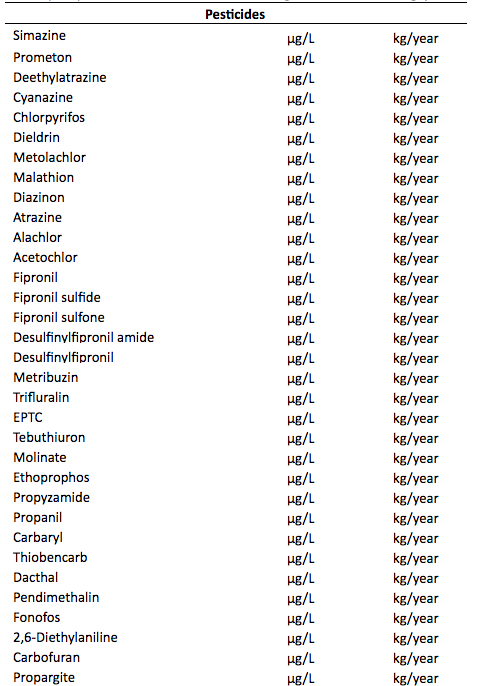
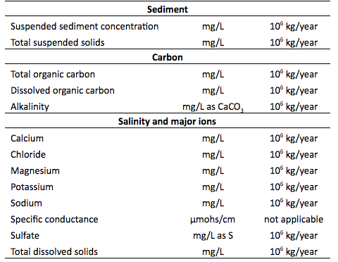
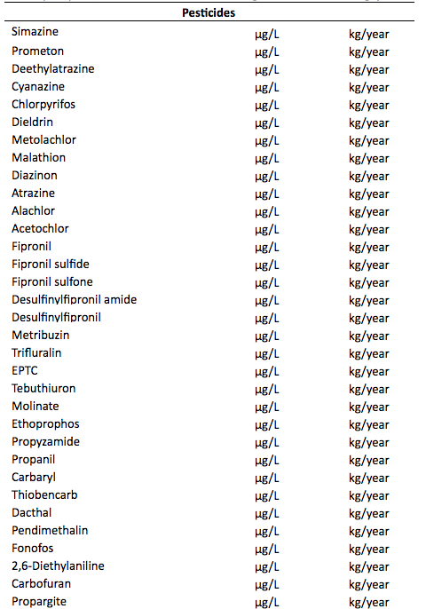
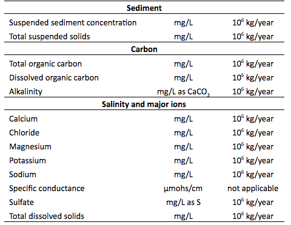

Study scope
The purpose of this study is to determine if the quality of the Nation's streams and rivers has become better, worse, or stayed the same since 1972. Evaluating trends in surface-water quality is one component of a larger effort to understand the quality of the Nation's water resources, and how those conditions are changing over time.
More information on data sources, preparation and screening; statistical methods; and results is available in Oelsner, G.P., Sprague, L.A., Murphy, J.C., Zuellig, R.E., Johnson, H.M., Ryberg, K.R., Falcone, J.A., Stets, E.G., Vecchia, A.V., Riskin, M.L., De Cicco, L.A., Mills, T.J., and Farmer, W.H., 2017, Water- Quality Trends in the Nation's Rivers and Streams 1972-2012-Data Preparation, Statistical Methods, and Trend Results: U.S. Geological Survey Scientific Investigations Report 2017-5006, 136p.,
https://doi.org/10.3133/sir20175006. More information on the overall study is available at
https://water.usgs.gov/nawqa/swtrends/.
The Nation's rivers and streams are a valuable resource, providing drinking water for a growing population, irrigation for crops, habitat for aquatic life, and many recreational opportunities. But pollution from urban and agricultural areas continues to pose a threat to water quality. Since passage of the Clean Water Act in 1972, Federal, State, and local governments have invested billions of dollars to reduce pollution entering streams and rivers. Yet recently, the U.S. Environmental Protection Agency reported that more than half of the Nation's stream miles have ecosystems in poor condition. In order to understand the return on these investments, and to more effectively manage and protect the Nation's water resources in the future, we need to know how and why water quality has been changing over time.
The U.S. Geological Survey's National Water-Quality Assessment (NAWQA) Project conducted this study, using data collected by the U.S. Geological Survey and by many partner monitoring organizations across the United States (see FAQ #5).
Publicly available water-quality data for streams and rivers were obtained from the U.S. Geological Survey's National Water Information System (NWIS) database at
https://waterdata.usgs.gov/usa/nwis and the U.S. Environmental Protection Agency's STOrage and RETrieval (STORET) database at
https://www.epa.gov/waterdata/storage-and-retrieval-and-water-quality-exchange. In addition, relevant water-quality records that currently are not being housed in NWIS or STORET were requested from water resource agencies in each state. Ultimately, we screened more than 185 million water-quality records from nearly 480,000 sites and more than 600 organizations. These organizations include Federal and State agencies, Tribes, counties, universities, non-governmental organizations, and other organizations like waste-water treatment facilities.
Ecological data were obtained from the U.S. Geological Survey's BioData database at
https://aquatic.biodata.usgs.gov/. Daily streamflow data were obtained from NWIS; selected non-USGS streamflow data were obtained from state databases.
Nutrients - total nitrogen, total phosphorus, nitrate, ammonia, and orthophosphate
Pesticides - 2,6-Diethylaniline, Acetochlor, Alachlor, Atrazine, Carbaryl, Carbofuran, Chlorpyrifos, Cyanazine, Dacthal, Deethylatrazine, Desulfinylfipronil, Desulfinylfipronil amide, Diazinon, Dieldrin, EPTC, Ethoprophos, Fipronil, Fipronil sulfide, Fipronil sulfone, Fonofos, Malathion, Metolachlor, Metribuzin, Molinate, Pendimethalin, Prometon, Propanil, Propargite, Propyzamide, Simazine, Tebuthiuron, Thiobencarb, Trifluralin
Sediment - suspended sediment and total suspended solids
Carbon - dissolved organic carbon and alkalinity
Salinity - specific conductance, total dissolved solids, chloride, sulfate
Aquatic ecology - metrics for fish, invertebrates, and algae (diatoms)
1972-2012, 1982-2012, 1992-2012, 2002-2012. These decadal trend periods allowed us to start our evaluations at the passage of the Clean Water Act in 1972 and the initiation of the National-Water Quality Assessment Program in 1992. They also allowed us to evaluate trends in recent years, when many management programs have been initiated.
As with any water-quality study, there is a lag between sample collection and data release due to laboratory analysis and data quality review, and another lag between data release and the release of study findings due to analysis and interpretation. However, a much longer lag occurred in this study because we used water-quality data from 608 different organizations. The data were provided to us in many different formats; data from the different organizations had different nomenclature; and many of the records had incomplete or missing metadata (Sprague and others, 2017). Resolving these issues (when even possible) required over three years of effort. In the end, this study provides results from the largest-ever assessment of water-quality changes in the Nation's streams and rivers.
Features of the Mapper
An explanation of the arrows and icons on the map and what they mean can be found in the
User Guide Explanation tab. A description of how to activate map layers can be found in the
User Guide Map Select Options tab. A description of the search, zoom, and print capabilities can be found in the
User Guide Search, Zoom, Print tab.
Yes, you can download the data that were suitable for long-term trend analysis (see FAQ #13) and the associated metadata through the following U.S. Geological Survey data releases:
De Cicco, L.A., Sprague, L.A., Murphy, J.C., Riskin, M.L., Falcone, J.A., Stets, E.G., Oelsner, G.P., and Johnson, H.M., 2017, Water-quality and streamflow datasets used in the Weighted Regressions on Time, Discharge, and Season (WRTDS) models to determine trends in the Nation's rivers and streams, 1972-2012: U.S. Geological Survey data release,
http://dx.doi.org/10.5066/F7KW5D4H.
Ryberg, K.R., Murphy, J.C., Falcone, J.A., Riskin, M.L., Wieben, C.M., and Vecchia, A.V., 2017, Pesticide concentration and streamflow datasets used to evaluate pesticide trends in the Nation's rivers and streams, 1992-2012: U.S. Geological Survey data release,
http://dx.doi.org/10.5066/F7BC3WPC.
Zuellig, R.E. and Riskin, M.L., 2017, Ecological community datasets used to evaluate the presence of trends in ecological communities in selected rivers and streams across the United States, 1992-2012: U.S. Geological Survey data release,
http://dx.doi.org/10.5066/F7G44ND3.
You also can download the land-use data shown in the Map Layers option through the following U.S. Geological Survey report:
Falcone, J.A., 2015, U.S. conterminous wall-to-wall anthropogenic land use trends (NWALT), 1974-2012: U.S. Geological Survey Data Series 948, 33 p.
If you are using Safari, the table will not automatically download. When you see the comma-delimited trends table displayed in your browser, go to the "File tab" in Safari, select "Save As", enter your desired filename in the "Export As" field, and change the "Format" field to "Page Source". Then select save, and you will see the .csv file in the location you specified on your local computer. The download functionality does not work in Internet Explorer; you will need to use a different browser.
Study methods
We used Weighted Regressions on Time, Discharge, and Season (WRTDS) (Hirsch and De Cicco, 2015) for nutrients, sediment, carbon, and salinity. We used the seasonal wave model with streamflow adjustment (SEAWAVE-Q) (Vecchia and others, 2008) for pesticides. We used a newly developed Kendall-based test for aquatic ecology (Oelsner and others, 2017).
As we began reviewing the compiled water-quality data set, it was immediately clear that there were some sites we could not use for a variety of reasons, such as an insufficient number of samples or missing metadata (see FAQ #15). We set up a series of screening steps to ensure the data we used for trend analysis all met a minimum standard. Our screening steps are described in detail in Oelsner and others, 2017. A brief summary of our screening steps is provided here. The criteria for aquatic ecology are slightly more liberal than for the other constituents because of the relative dearth of long-term monitoring for aquatic ecology.
Generally, we screened nutrients, sediment, carbon, and salinity data sets for (1) at least quarterly data in the first two years and last two years of the trend period, (2) at least quarterly sampling in at least 70% of all years, (3) availability of suitable daily streamflow for the entire period, (4) 10-14% of samples collected at moderate to high streamflow conditions during each decade, (5) no more than 50% censored data. Each trend period was screened separately.
We screened pesticides data sets for (1) at least three quarterly samples in either of the first two years and either of the last two years of the trend period, (2) at least three quarterly samples in at least 50% of all years, (3) no gaps longer than 3 to 5 years (depending on the trend period), (4) availability of suitable daily streamflow through one year prior to the start of the trend period, (5) at least 10 uncensored concentrations. Each trend period was screened separately.
We screened aquatic ecology data sets for (1) data within one year of the start year and one year of the end year of the trend period, (2) data in 50% of years of each decade, (3) no gaps longer than 4 years, (4) availability of measured or modeled daily streamflow data through 240 days prior to the first sample. Each trend period was screened separately.
The pesticide screening criteria differ from criteria for other constituents for a variety of reasons, some particular to the trend analysis method, others particular to the nature of pesticide concentrations in surface water.
The method (SEAWAVE-Q; Vecchia and others, 2008) was specifically developed to address a number of difficulties often found in pesticide data, such as strong seasonality in response to use patterns, high numbers of concentrations below laboratory reporting levels (RLs), complex relations between streamflow and concentration, and intermittent or changing sampling frequencies (both inter-annually and intra-annually).
Pesticide concentrations in surface water have a strong seasonal signal depending on the time of application (there may be one or more general periods of application depending on the pesticide, some are post-emergent spring applied, others may be pre-emergent applied in the spring and/or fall, other patterns may exist depending on the climate and crop). The seasonal variability in pesticide concentrations often is not closely related to seasonal variability in streamflow but is more closely related to the seasonal change in application amounts. This is in sharp contrast to other water-quality constituents such as dissolved major ions or nutrients, whose concentrations tend to be more directly related to streamflow (Vecchia and others, 2008). SEAWAVE-Q specifically models the seasonality in application and a "decay" rate (depending on the properties of the chemical, concentrations decrease at varying rates after the peak application period). Because of these important characteristics of pesticide concentrations in surface water and the features of SEAWAVE-Q, pesticide sites do not require the same screening for high streamflow samples that are needed for some other constituents/methods.
SEAWAVE-Q uses maximum likelihood regression and survival analysis and therefore is robust for highly censored constituents. Generally, only 10 uncensored values are needed for a trend period (provided a sufficient number of censored samples and streamflow data). The default minimum number of uncensored values in WRTDS-the trend model used for the other water-quality constituents in this study-is 50. If there are too few uncensored observations, WRTDS will adjust by making the calibration windows wider until the number increases above this minimum (Hirsch and De Cicco, 2015).
SEAWAVE-Q does not require streamflow on the day of sampling only, but requires long-term streamflow monitoring (at least a year prior to the start of the trend period for the national trends study) in order to calculate and incorporate streamflow anomalies. Small gaps in the streamflow record can be estimated, but streamflow gages that are out of operation for 30 days or more during a trend analysis period cause issues, such as a gap in the model, or disqualification of the site, depending on the length and timing of the gap.
SEAWAVE-Q is robust to gaps in the samples, provided the samples meet some criteria to be representative of the trend period. In a recent study of pesticide trends in urban streams (Ryberg and others, 2010), at least 10 uncensored values were required and the minimum sampling criteria for a particular site to be considered adequately representative of a particular 9-year trend assessment period were (1) at least 2 years with four or more samples collected during the first 5 years of the assessment period and (2) at least 2 years with four or more samples collected during the last 5 years of the assessment period. Examples are shown in Ryberg and others (2010, figures 2-5) for sites with varying numbers of samples per year and with high degrees of censoring. In another recent study of pesticide trends in major river basins of the United States (Ryberg and others, 2015), the minimum sampling criteria for a particular site to be considered adequately representative of a particular 10-year trend period were to have (1) at least 10 uncensored values, (2) at least 5 years of samples, (3) 6 or more samples in at least 2 of the first 5 years of the period, and (4) 6 or more samples in at least 2 of the last 5 years of the period.
These issues have been thoroughly explored and tested in a number of published studies (Vecchia and others, 2008, Sullivan and others, 2009; Ryberg and others, 2010; Ryberg and others, 2014) as well as in numerous unpublished exploratory data analysis exercises refining the seasonality and decay components of the model, testing the effect of gaps in the data, and testing the degree of censoring.
In many cases, water-quality data did not have enough information for us to unambiguously interpret the value. We use the term metadata to describe information that accompanies the water-quality value itself. Critical metadata includes the site location, the sample date, the water-quality constituent being reported (e.g. nitrate, alkalinity, suspended sediment), the physical medium that was sampled (e.g. water, soil, gas), the reported units (e.g. mg/L or ug/L), whether a sample was filtered or unfiltered, whether a sample is reported in elemental or molecular form (e.g. nitrate as nitrogen or nitrate as nitrate), and number of others. Data without sufficient metadata were excluded from our analyses. See Sprague and others (2017) for more detail.
Metrics of community composition describe various elements of the aquatic community present in each sample. Collectively, those chosen for this study describe the total number of different organisms found, how evenly their counts are distributed, how counts within groups are distributed relative to other groups, and how similar the contents of each sample is relative to the starting year in the trend-period. A detectable trend indicates that changes in community composition have occurred; however, meaning of the directional response is metric specific. For example, a decreasing trend in similarity among samples indicates that community composition changed relative to the first year. In this case, a decreasing trend simply indicates that change occurred; it does not mean anything about what elements within the community changed. In contrast, a decreasing trend in the relative percent of the number of different types of mayflies, stoneflies, and caddisflies indicates that fewer distinguishable types of organisms within these groups were present at the end the trend-period relative to the rest of the community.
Tolerance metrics describe the average sensitivity of the different types of organisms found in a sample to specific water-quality stressors or conditions. An increasing trend in any of the fish or macroinvertebrates tolerance metrics may indicate that the different types of organisms found in a sample are changing over the trend period and that these changes overall are increasing community tolerance to the specific water-quality stressor. In this case, sensitive organisms are being replaced by more tolerant organisms. Conversely, a decreasing trend indicates tolerant organisms are being replaced by more sensitive organisms, and overall the community is becoming more sensitive to the potential water-quality stressor. Tolerance measures selected for diatoms (a major group of algae) provide slightly different information as a result of how they are calculated. Metrics for fish and macroinvertebrates are expressed as average community tolerance and are calculated from individual tolerance values associated with each different organism type found in a sample. In the case for diatoms, metrics either represent the number of different types of cells that are known to be sensitive to nutrient or organic enrichment, or the number of different types of cells known to tolerate a particular water-quality constituent above or below a particular concentration value. In either case, a decreasing or increasing trend indicates that different types of organisms associated with the measure are being lost or gained over the trend period.
Assessment indicators measure elements of the aquatic community relative to an expected condition derived from comparable least-disturbed or reference locations. Herein, the ratio of the different types of organisms found in a sample to the different types of organisms expected in the sample is used as a measure of how different the observed community is from the expected community. In general, a decreasing trend indicates that the different types of organisms found in a sample that match what was expected are decreasing over the trend period, whereas an increasing trend indicates the opposite.
See Oelsner and others (2017) and citations within for more information on these aquatic ecology metrics.
There are many reasons why a site with long-term monitoring data could have been excluded from our study. Generally sites were excluded either because of missing or incomplete metadata, failure to pass one or more of our screening criteria, or poor model fit during trend analysis.
It is important to note that although a site may have been excluded from our study because of our specific objectives, data from the site could still be valuable for other studies looking at different trend periods or studies with different objectives altogether.
Changes in concentration and load over time can be strongly influenced by random and systematic variations in streamflow. Flow normalization removes the variation in concentration or load that is due to variations in streamflow. In the case where the streamflow variability is only random, flow normalization will remove some of the non-trend noise, making the signal (the trend) easier to detect. In the case where the streamflow variability is systematic (e.g. where there is a trend in streamflow), the trend in streamflow may be causing all or part of the trend in water quality. Flow normalization will remove the part of the water-quality trend that is caused by the trend in streamflow, leaving behind the trend in water quality that is caused by other factors. These other factors are usually human actions, like land development, changes in pesticide application, or implementation of best management practices. Removing the influence of the trend in streamflow improves our ability to evaluate the effects of human actions on water quality.
In situations where natural changes in streamflow are affecting year-to-year variability in concentration or load, flow normalization also helps us to avoid mistaking the effects of natural changes in streamflow for progress in cleaning up water quality. In the example below showing nitrate loads entering the Gulf of Mexico from the Mississippi River, there were several years when loads dropped below the 1980-1996 baseline used to measure progress in reducing loading to the Gulf of Mexico. We could interpret that to mean we have made substantial progress in reducing loads to the Gulf as a result of our management practices in the watershed. However, the pattern in load closely follows the pattern in streamflow, indicating that the low loads occurred in years when streamflow was naturally low. When we remove that streamflow-related variability, the pattern in flow normalized loads shows relatively little change that can be tied to human actions between 1980 and 2010.

Variability in streamflow also can affect year-to-year variability in aquatic communities. Selected hydrology metrics were calculated to help describe conditions antecedent to each aquatic ecology sample date to allow for flow-normalized trends in aquatic ecology metrics.
See Hirsch and De Cicco (2015) for more information on flow normalization of nutrients, sediment, salinity, major ions, and carbon data; Vecchia and others (2008) for more information on flow normalization of pesticide data; and Oelsner and others (2017) for more information on the flow normalization of ecological data.
Study results
A likelihood-based approach is used to report these trend results. When the trend is "likely up" or "likely down", the trend likelihood value associated with the trend is between 0.85 and 1.0 -- in other words, the chance of the trend occurring in the specified direction is at least an 85 out of 100. When the trend is "somewhat likely up" or "somewhat likely down", the trend likelihood value associated with the trend is between 0.7 and 0.85 -- in other words, the chance of the trend occurring in the specified direction is between 70 and 85 out of 100. When the trend is "about as likely as not", the trend likelihood value associated with the trend is less than 0.7 -- in other words, the chance of the trend being either upward or downward is less than 70 out of 100.
This likelihood-based approach is used as an alternative to the null-hypothesis significance testing (NHST) approach that is often used when reporting water-quality trends. The likelihood-based approach gives people more intuitive information on the certainty of a trend estimate, and provides more evidence of a growing problem or initial clean-up successes. Consider an example where the chance of an upward trend in nitrate concentrations at a site is 80 out of 100 (a trend likelihood value of 0.80). Using the NHST approach and a traditional alpha value of either 0.05 or 0.1, the trend would be reported as nonsignificant. Using the likelihood-based approach, the trend would be reported instead as "somewhat likely up". The NHST approach could lead to a false sense of security because it indicates that there isn't strong proof of a growing problem. The likelihood-based approach indicates instead that it is somewhat likely conditions in the stream are not improving, giving people more information to use when making decisions about watershed management.
For more information on the philosophy of the likelihood-based approach, please see Hirsch and others (2015), "A bootstrap method for estimating uncertainty of water quality trends", at
http://dx.doi.org/10.1016/j.envsoft.2015.07.017. Trend likelihood values for nutrients, sediment, salinity, major ions, and carbon were determined using the bootstrap approach in that same report. Trend likelihood values for pesticides and aquatic ecology metrics were determined using the p-value reported from their respective trend tests, using the equation 1-(p-value/2). See Vecchia and others (2008), "Modeling Variability and Trends in Pesticide Concentrations in Streams", at
http://onlinelibrary.wiley.com/doi/10.1111/j.1752-1688.2008.00225.x/pdf for more information on calculating p-values in the pesticide models. See Oelsner, G.P., Sprague, L.A., Murphy, J.C., Zuellig, R.E., Johnson, H.M., Ryberg, K.R., Falcone, J.A., Stets, E.G., Vecchia, A.V., Riskin, M.L., De Cicco, L.A., Mills, T.J., and Farmer, W.H., 2017, Water- Quality Trends in the Nation's Rivers and Streams 1972-2012-Data Preparation, Statistical Methods, and Trend Results: U.S. Geological Survey Scientific Investigations Report 2017-5006, 136p.,
https://doi.org/10.3133/sir20175006. for more information on calculating p-values in the ecology models.
Monitoring varies among sites. Some sites are only monitored for one constituent; some are monitored for many constituents. The duration and regularity of monitoring also varies among sites. Some sites are only monitored for a short period of time; some are monitored for decades. The amount and type of data available at each site affects our ability to conduct trend analysis. For example, a pesticide data record needed at least 10 uncensored concentrations to conduct trend analysis; many sites did not meet this criterion due to low concentrations of pesticides in some areas of the country. See FAQ #13 for more detail on data screening.
For a given site and trend period, the direction and likelihood of pesticide trends will be the same for concentration and load. The graphs will be the same concentration and load, since both are derived from the same model. The magnitude of the trends also will be the same for concentration and load, when reported in percent. The magnitude of the trends will be different for concentration and load, when reported in original units. Using the SEAWAVE-Q model for pesticides, when comparing the trend in percent, the trend in flow-normalized annual load cannot be different mathematically from the trend in flow-normalized annual concentration when there is no trend in flow. This is a computational constraint of the SEAWAVE-Q model. A different model - Weighted Regressions on Time, Discharge, and Season (WRTDS) - was used for the other water-quality constituents (see FAQ #12). One attribute of the WRTDS model is that it allows the trend in flow-normalized concentration to be different in magnitude or opposite in direction from trends in flow-normalized load (Hirsch and De Cicco, 2015). For example, if there were large decreases in point source inputs of a pollutant but increases in nonpoint sources associated with high-flow events, then we might see a downward trend in concentration but an upward trend in flux. But the WRTDS model was not used with pesticides, because SEAWAVE-Q was specifically developed to address a number of difficulties often found in pesticide data, such as strong seasonality in response to use patterns, high numbers of concentrations below laboratory reporting levels, complex relations between streamflow and concentration, and intermittent or changing sampling frequencies (Vecchia and others, 2008) (see FAQ #14).
For nutrients, sediment, salinity, major ions, and carbon (from Hirsch and De Cicco, 2015):
- The first graph shows a time series plot of the observed concentration values as a function of time, for the entire period for which data are available in a public database (see FAQ #5). In some cases, this period may exceed the trend period. The convention for showing a censored value (a value reported as below a laboratory detection limit) is the use of a line segment, rather than a simple point, for these observations.
- The second graph shows boxplots of observed concentrations by month and is a simple way to characterize the amount of seasonal variability in the data and learn, at a glance, what times of the year have particularly high or low concentrations. The boxplots presented here use the plotting convention that the width of the box is proportional to the square root of the number of samples represented by the box. This visual cue makes indicates whether there are large differences in the intensity of sample collection across the different months of the year.
- The third graph shows a scatter plot of observed concentration values as a function of the model estimates of concentration for those days. It also shows a 1:1 line. The plot is designed to provide a graphical representation of potential bias in concentration estimates. A model that fits well should be clustered around that 1:1 line and should be roughly symmetrical around that line.
- The fourth graph shows a scatter plot of observed load (referred to on the plot as "flux") values as a function of the model estimates of load for those days. It also shows a 1:1 line. The plot is designed to provide a graphical representation of potential bias in load estimates. A model that fits well should be clustered around that 1:1 line and should be roughly symmetrical around that line.
- The fifth graph shows a time series plot of the annual average concentration and annual flow-normalized concentration, as estimated by the model. The annual average concentration is displayed as individual points. The flow-normalized results (see FAQ #18) are presented as a smooth curve (in solid green) even though they are computed for a single point in time for each year. This graphical convention emphasizes the relatively smooth nature of the flow-normalized concentration record in contrast with the annual average concentration record. The 90th and 10th confidence intervals ("CI") of the annual flow-normalized concentrations are shown as smoothed curves as well (in dashed green), to emphasize the uncertainty in these model estimates. "Replicates" refers to the number of bootstrap replicates used to generate the confidence intervals. "Block" refers to the block length used in the bootstrap method. For more information on the theory behind the number of replicates and the block length, see Hirsch and others (2015). When there was a contemporaneous trend in streamflow, the flow-normalized estimates may diverge from the annual estimates. In these cases, the flow-normalized estimates reflect the portion of the in-stream trend that was caused by factors other than changes in streamflow, whereas the annual estimates reflect the overall in-stream trend that was caused by all factors, including, among other things, random and systematic changes in streamflow.
- The sixth graph shows a time series plot of the annual average load (referred to on the plot as "flux") and annual flow-normalized load, as estimated by the model. The annual average load is displayed as individual points. The flow-normalized results (see FAQ #18) are presented as a smooth curve (in solid green) even though they are computed for a single point in time for each year. This graphical convention emphasizes the relatively smooth nature of the flow-normalized load record in contrast with the annual average load record. The 90th and 10th confidence intervals ("CI") of the annual flow-normalized loads are shown as smoothed curves as well (in dashed green), to emphasize the uncertainty in these model estimates. "Replicates" refers to the number of bootstrap replicates used to generate the confidence intervals. "Block" refers to the block length used in the bootstrap method. For more information on the theory behind the number of replicates and the block length, see Hirsch and others (2015). When there was a contemporaneous trend in streamflow, the flow-normalized estimates may diverge from the annual estimates. In these cases, the flow-normalized estimates reflect the portion of the in-stream trend that was caused by factors other than changes in streamflow, whereas the annual estimates reflect the overall in-stream trend that was caused by all factors, including, among other things, random and systematic changes in streamflow.
For pesticides (from Ryberg and Vecchia, 2013):
These graphs show a parameter code for each pesticide contained in the graphs. A definition for these parameter codes is available from the parameter code dictionary for the U.S Geological Survey's National Water Information System (NWIS) data base.
- The first graph shows a time series plot of the observed (referred to on the plot as "measured concentrations") concentrations in red, as a function of time, for the trend period. The convention for showing a censored value (a value reported as below a laboratory detection limit) is the use of an open circle, rather than a filled circle, for these observations. The time series of model estimates of concentration (referred to on the plot as "fitted concentrations") is shown as a thin black line. The estimated trend over the trend period is shown as a thicker straight black line.
- The second graph shows a time series plot of the daily percentiles of the model estimates of concentration, as a function of time. The 50th percentile of estimated concentrations (referred to on the plot as "fitted median concentration") is shown as a black line. The 95th percentile of estimated concentrations (referred to on the plot as "fitted 95th percentile concentration") is shown as a red line. The 50th percentile of estimated concentrations is an estimate of the concentration that is exceeded 50 percent of the time (about 180 days) in a typical year. The 95th percentile of estimated concentrations is an estimate of the concentration that is exceeded 5 percent of the time (about 18 days) in a typical year. These percentiles should not be confused with the sample percentiles computed using the observed concentrations. Percentiles computed using the observed concentrations would be affected by the frequency and timing of sample collection; because the samples are not collected to represent a random sampling of days within each year, percentiles computed using the observed concentrations could not be directly related to any particular duration of exceedance. For more information on the theory behind the daily percentile calculation, see Ryberg and others (2010).
- The third graph shows a scatter plot of observed concentration values (referred to on the plot as "measured concentrations") as a function of the model estimates of concentration for those days (referred to on the plot as "fitted concentrations"). It also shows a 1:1 line. The plot is designed to provide a graphical representation of potential bias in concentration estimates. A model that fits well should be clustered around that 1:1 line and should be roughly symmetrical around that line. The convention for showing a censored value (a value reported as below a laboratory detection limit) is the use of an open circle; uncensored values are shown as a filled circle. To make the plots more representative of diagnostic plots used for standard (non-censored) regression, a method for substituting randomized residuals in place of censored residuals was used. See Ryberg and Vecchia (2013) for more information.
- The fourth graph shows a scatter plot of standardized model residuals as a function of the model estimates of concentration (referred to on the plot as "fitted concentrations") for those days. The plot is designed to provide a graphical representation of potential bias in concentration estimates. A model that fits well should be roughly symmetrical around the black horizontal line at the standardized residual value of zero. The convention for showing a censored value (a value reported as below a laboratory detection limit) is the use of an open circle; uncensored values are shown as a filled circle. To make the plots more representative of diagnostic plots used for standard (non-censored) regression, a method for substituting randomized residuals in place of censored residuals was used. See Ryberg and Vecchia (2013) for more information.
- The fifth graph shows a time series plot of standardized model residuals as a function of time. The plot is designed to provide a graphical representation of potential changes in the bias in concentration estimates over time. A model that fits well should be roughly symmetrical around the black horizontal line at the standardized residual value of zero. The convention for showing a censored value (a value reported as below a laboratory detection limit) is the use of an open circle; uncensored values are shown as a filled circle. To make the plots more representative of diagnostic plots used for standard (non-censored) regression, a method for substituting randomized residuals in place of censored residuals was used. See Ryberg and Vecchia (2013) for more information.
- The sixth graph shows a scatter plot of standardized model residuals as a function of month. The plot is designed to provide a graphical representation of potential seasonal changes in the bias in concentration estimates over time. A model that fits well should be roughly symmetrical around the black horizontal line at the standardized residual value of zero. The convention for showing a censored value (a value reported as below a laboratory detection limit) is the use of an open circle; uncensored values are shown as a filled circle. To make the plots more representative of diagnostic plots used for standard (non-censored) regression, a method for substituting randomized residuals in place of censored residuals was used. See Ryberg and Vecchia (2013) for more information.
There are no graphs available for aquatic ecology trends.
For nutrients, sediment, salinity, major ions, carbon, and pesticides, the graphs are the same for concentration and load for a given trend period. This is because the concentration and trend results were obtained from the same model. For nutrients, sediment, salinity, major ions, and carbon (but not for pesticides), the concentration and load graphs also will be the same for different trend periods. For these constituents, the same model was used to obtain trend results for all available time periods. For pesticides, a different model was used for the 1992-2012 and the 2002-2012 trend period, so these graphs will be different.
Yes, and there are a few reasons why this could be happening. The most likely reason is that the trend periods are different. The choice of start and end years can make a big difference. For example, cigarette smoking in the United States increased in the first part of the 20th century as mass production, advertising, and addiction increased. After the first Surgeon General's report in 1964 on the harmful effects of smoking, smoking rates decreased. If we were to determine a trend in cigarette consumption between 1900 and 2002, the result would show an increase. However, if we were to determine a trend between 1970 and 2002, the result would show a decrease. The same potential difference can occur with water-quality trends any time the direction of change in concentration or load reverses, or any time the rate of change slows or becomes more rapid.
Another common reason for trend results at the same site to be different-even when the trend period is the same-is the use of different trend methods. Because periodic or random factors like season or streamflow can add noise to a water-quality time series, statistical methods are necessary to separate the signal (the trend) from the noise. The choice of trend method can affect how much of the noise is removed, which in turn can affect the power of the trend test. With a robust enough data set, the differences between statistical methods should be minor. We conducted extensive sensitivity testing to develop a set of screening criteria that would lead us to sites with robust data sets. As a result, any differences between our results and your results for the same trend period should be minor, although there may be rare exceptions.
One exception to the above that might cause differences in trend results at the same site is the choice of whether or not to flow normalize. A trend in concentrations or loads that are flow-normalized (or flow-adjusted) is often different from a trend in concentrations or loads that are not flow normalized. See FAQ #18 for more information on flow normalization.
In a smaller number of cases, differences in trend results may be related to the characteristics of our respective data sets. For instance, we may have combined data from two agencies that were sampling at the same location, whereas you only used data from one of the sources. Or we may have excluded some data that were inadequately documented in our database, whereas you may have included those data because you had adequate documentation locally.
Access
http://water.usgs.gov/nawqa for information about the USGS NAWQA Project and its on-going work to monitor the Nation's water resources.
Citations
All of the results in the mapper are reported in Oelsner, G.P., Sprague, L.A., Murphy, J.C., Zuellig, R.E., Johnson, H.M., Ryberg, K.R., Falcone, J.A., Stets, E.G., Vecchia, A.V., Riskin, M.L., De Cicco, L.A., Mills, T.J., and Farmer, W.H., 2017, Water- Quality Trends in the Nation's Rivers and Streams 1972-2012-Data Preparation, Statistical Methods, and Trend Results: U.S. Geological Survey Scientific Investigations Report 2017-5006. That citation can be used when referencing the mapper.
For questions related to the study methods and results, you can contact:
Lori Sprague
Coordinator, NAWQA Surface-Water Trend Studies
Email: lsprague@usgs.gov
For questions related to the operation of the mapper, you can contact:
Hans Vraga
Project Manager, Web Informatics and Mapping (WiM)
Email: hvraga@usgs.gov
Hirsch, Robert M., Archfield, Stacey A., and DeCicco, Laura A., 2015, A bootstrap method for estimating uncertainty of water quality trends, Environmental Modelling and Software, 73, 148-166,
http://www.sciencedirect.com/science/article/pii/S1364815215300220
Hirsch, R.M., and De Cicco, L.A., 2015, User guide to Exploration and Graphics for RivEr Trends (EGRET) and dataRetrieval-R packages for hydrologic data (version 2.0, February 2015): U.S. Geological Survey Techniques and Methods book 4, chap. A10, 93 p.,
http://dx.doi.org/10.3133/tm4A10
Oelsner, G.P., Sprague, L.A., Murphy, J.C., Zuellig, R.E., Johnson, H.M., Ryberg, K.R., Falcone, J.A., Stets, E.G., Vecchia, A.V., Riskin, M.L., De Cicco, L.A., Mills, T.J., and Farmer, W.H., 2017, Water-Quality Trends in the Nation's Rivers and Streams 1972-2012-Data Preparation, Statistical Methods, and Trend Results: U.S. Geological Survey Scientific Investigations Report 2017-5006, 136p.,
https://doi.org/10.3133/sir20175006.
Ryberg, K.R., Vecchia, A.V., Gilliom, R.J., and Martin, J.D., 2014, Pesticide trends in major rivers of the United States, 1992-2010: U.S. Geological Survey Scientific Investigations Report 2014-5135, 63 p.,
http://dx.doi.org/10.3133/sir20145135.
Ryberg, K.R., and Vecchia, A.V., 2013, seawaveQ-An R package providing a model and utilities for analyzing trends in chemical concentrations in streams with a seasonal wave (seawave) and adjustment for streamflow (Q) and other ancillary variables: U.S. Geological Survey Open-File Report 2013-1255, 13 p., with 3 appendixes,
http://dx.doi.org/10.3133/ofr20131255.
Ryberg, K.R., Vecchia, A.V., Martin, J.D., and Gilliom, R.J., 2010, Trends in pesticide concentrations in urban streams in the United States, 1992-2008: U.S. Geological Survey Scientific Investigations Report 2010-5139, 101 p.
https://pubs.usgs.gov/sir/2010/5139/
Sprague, L.A., Oelsner, G.P, and Argue, D.M., 2017, Challenges with secondary use of multi-source water-quality data in the United States: Water Research, v. 110, p. 252-261.
https://dx.doi.org/10.1016/j.watres.2016.12.024.
Sullivan, D.J., Vecchia, A.V., Lorenz, D.L., Gilliom, R.J., and Martin, J.D., 2009, Trends in pesticide concentrations in corn-belt streams, 1996-2006: U.S. Geological Survey Scientific Investigations Report 2009-5132, 75 p.,
http://pubs.usgs.gov/sir/2009/5132/.
Vecchia, A.V., Martin, J.D., and Gilliom, R.J., 2008, Modeling variability and trends in pesticide concentrations in streams: Journal of the American Water Resources Association, v. 44, no. 5, p. 1308-1324,
http://onlinelibrary.wiley.com/doi/10.1111/j.1752-1688.2008.00225.x/pdf
 


